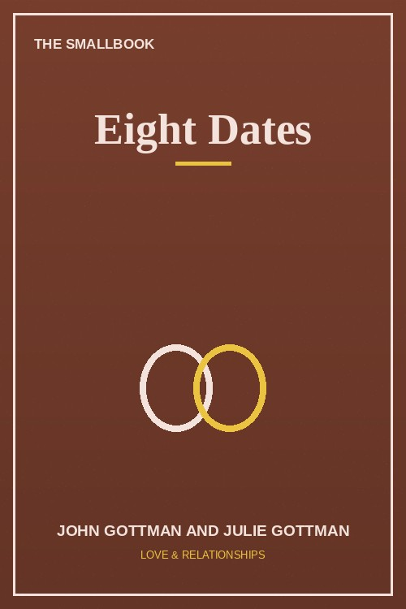

Library › Love & Relationships
Eight Dates - Summary & Key Lessons

Essential conversations for a lifetime of love, one date at a time.
📖 OPEN THE FULL INTERACTIVE BREAKDOWN →🌐 Read it in Hindi, Hinglish, Gujarati, Tamil & 22 more languages, with audio.
💡 The Big Idea
After decades studying couples, the Gottmans distilled the eight conversations that determine whether love lasts, and built a date around each: trust and commitment, conflict, sex, money, family, fun, spirituality and dreams. Each date has one rule: curiosity over persuasion. You are not there to win. You are there to understand your partner's inner world on that subject, because understanding, renewed regularly, is the actual substance of intimacy.
🧠 The 8 Key Lessons
Lesson 1: Trust Is Built in Sliding Door Moments
Date One: Trust and Commitment
The first date asks what trust means to each of you. Gottman's research shows trust is not built in grand gestures but in sliding door moments: small instances where you can turn toward your partner's need or away from it. Each turn-toward deposits into an emotional bank account; each turn-away withdraws. Couples who cherish, who actively choose the relationship in daily micro-decisions, build the commitment that weathers the big withdrawals.
📖 Example: A partner mentions a hard day in passing. Sliding door: ask and listen, or keep scrolling. Gottman's lab found these seconds, multiplied by thousands, predict divorce better than any single big betrayal question. The mundane is the marriage. Read the full example →
⚡ Do this: This week, catch three sliding door moments and turn toward deliberately. Small, noticed, repeated.
Lesson 2: Conflict Is a Conversation About Dreams
Date Two: Addressing Conflict
Sixty nine percent of couple conflict is perpetual, Gottman found, rooted in personality and life dreams, not solvable problems. The goal is not solution but dialogue: understanding the dream inside your partner's position. Gridlock happens when positions harden; it melts when each person can honour the other's underlying story, even while disagreeing. The date teaches couples to ask: what does this mean to you, from your history?
📖 Example: A fight about tidiness becomes comprehensible when he explains that order meant safety in his chaotic childhood home, and she explains that mess meant freedom from her rigid one. They still share a kitchen, but now they are negotiating two childhoods, with sympathy available. Read the full example →
⚡ Do this: Take one recurring argument and ask only dream questions for twenty minutes: what does your position protect or honour in you?
Lesson 3: Money Dates Surface Values, Not Just Budgets
Date Four: Money
Money fights are rarely about arithmetic. Each partner carries a money story written by their family: scarcity fear, status hunger, freedom buying, shame. The Gottmans' money date asks couples to read those stories aloud before touching a spreadsheet. When the story is honoured, compromise becomes possible, because the fight was never about the purchase; it was about what the purchase means.
📖 Example: He calls her spending reckless; she calls his saving joyless. His parents lost everything once; hers counted every coin and never celebrated anything. Both are protecting a child. The budget conversation works only after that one has happened. Read the full example →
⚡ Do this: Tell your partner your family's money story in ten minutes. Then ask theirs. Budgets next week.
Lesson 4: Fun and Play Are Not Rewards, They Are Glue
Date Six: Fun and Adventure
Couples file play under later, after the work, the children, the renovations. Gottman's longitudinal data says play is not decoration on intimacy; it is one of its load-bearing walls. Shared novelty and laughter keep the friendship system funded, and friendship is what carries couples through the perpetual problems. The date prescribes adventure scaled to real life: new routes, small risks, being beginners together on purpose.
📖 Example: Partners who met travelling often stop travelling together into the unknown and become co-managers of the known. One couple in the book revives play with a monthly mystery outing, planned alternately, budget capped, phones off, and credits it with saving the friendship inside the marriage. Read the full example →
⚡ Do this: Plan one small adventure this fortnight: somewhere neither of you has been, however near. Alternate who plans.
Lesson 5: Dreams Within Reach: The Last Date Looks Forward
Date Eight: Dreams
The final date asks each partner to name a life dream, shelved or secret, and the other to become its first ally. Gottman found that marriages thrive when partners can say my dreams live inside this relationship, even dreams the other does not share. Honouring does not require funding every wish; it requires knowing the wish exists and refusing to mock or bury it. The question that ends the book is practical: what is one step toward your dream that we can take this year?
📖 Example: A husband learns, after twenty years, that his wife dreams of living by the sea; she learns he dreams of writing. Neither dream was opposed. Both were simply unknown, and unknown dreams quietly accuse the marriage of being the obstacle. Read the full example →
⚡ Do this: Ask your partner tonight: what is a dream you have not told me lately? Answer with one step you could support this year.
Lesson 6: How to Have Every Date: Curiosity Rules
The Method
The Gottmans give each date the same discipline: come with open questions, leave persuasion at the door, and end with appreciation and one commitment. The dates fail when they become negotiations or trials. They work when both partners experience being known, which for many couples has quietly stopped happening amid logistics. The format is deliberately simple so that the hard part, honesty, has the whole stage.
📖 Example: Couples report the strange intimacy of answering questions they answered while dating, now with decades of new data. The format's power is repetition: eight subjects, visited yearly, keep a couple current with each other's becoming. Read the full example →
⚡ Do this: Put the eight dates on the calendar now, one a week. Same time weekly. Protect them like medical appointments.
Lesson 7: The State of the Union: A Weekly Ten Minutes
After the Dates
The Gottmans' apparatus continues past the eight dates into maintenance, and the deepest habit is the weekly State of the Union: appreciations first, then one issue raised with a soft start up, each partner heard to the speaker's satisfaction before problem solving is allowed. Deepening means scheduling it like medication rather than mood. Couples who wait to feel like talking wait for the feeling that only the talking produces, which is why the calendar, and not the heart, must hold the appointment.
📖 Example: Their lab couples who adopted the ritual showed the signature pattern: fights did not vanish, they got shorter and ended with repair instead of archaeology. The ten minute meeting acted as a pressure valve, keeping small grievances from compounding into the quarterly explosion that rewrites the whole marriage in one night. Read the full example →
⚡ Do this: Book a standing twenty minute State of the Union this week. Appreciations first, one issue maximum, speaker feels heard before solutions begin.
Lesson 8: The Four Horsemen, Brought on Every Date
After the Dates
The book quietly embeds its antidotes in the dates themselves: contempt is answered by appreciation, criticism by gentle start up, defensiveness by taking responsibility for even a sliver, stonewalling by self soothing. Deepening is recognising the horsemen as moods rather than verdicts. They visit every marriage, including the researchers' own; what distinguishes the masters is the speed of the antidote, not the absence of the poison. Bring that speed to the dates and they become sparring practice for the real rounds.
📖 Example: Julie and John Gottman's own published admissions, defensiveness at the sink, stonewalling in the famous flooded feeling, reassure readers that the horsemen ride in research marriages too. The difference on tape is boring and decisive: the antidote arrives in minutes, with humour, before the physiology floods the room. Read the full example →
⚡ Do this: Pick your household's most common horseman and post its antidote where the arguments happen. Practise the antidote once this week before you need it.
✅ 5-Step Action Plan
- Turn toward in three sliding door moments daily.
- Take the trust date: what does trust mean, what builds and breaks it for you?
- Revisit one perpetual problem with dream questions only.
- Schedule the eight dates across eight weeks, one per week.
- On each date, curiosity rules: no persuading, only understanding.
- Write down one dream of your partner's you learned, and honour it visibly.
- End each date with appreciation said out loud, specifically.
⚠️ When This Doesn't Work
The dates assume goodwill and safety on both sides. Where there is contempt, coercion or violence, the Gottmans themselves direct couples to professional help first.
💀 The Graveyard Proves It
💬 Best Quotes from Eight Dates
- “Successful relationships are not the result of avoiding conflict. They are the result of how you talk about it.”
- “Curiosity is the antidote to judgement.”
- “Every date is a chance to fall in love with the person your partner is becoming.”
Interactive version: mark lessons as read, listen in your language, share quote cards.